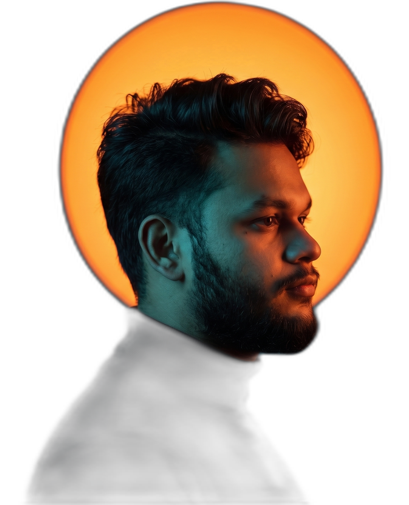

Roots · Tangail
Grew up in a small village in Tangail, Bangladesh — with big curiosity about how things work, both in nature and in tech.
[ Hello, I'm ]

BBA in Agribusiness @ ADUST · Tech enthusiast · Content creator
I'm Ilhan Mansiz Jisan, a student from Tangail, Bangladesh, currently living in Dhaka.
I completed my SSC at Nikla High School, Bhuapur, Tangail, then earned a Diploma in Agriculture from the Agriculture Training Institute, Sherpur. Right now I'm pursuing a BBA in Agribusiness (Evening program) at ADUST — 3rd semester running.
Beyond academics, I have a strong passion for technology. I actively build my tech skills and I'm working through a Google Professional Certificate on Coursera. I keep learning every day — and I'm happy to help if someone has a basic task.
I also enjoy creating content for social media.
Specialization in crop production, processing, packaging and marketing.
Agriculture Training Institute, Sherpur — crop science, soil management.
Nikla High School, Bhuapur, Tangail.
Grew up in a small village in Tangail, Bangladesh — with big curiosity about how things work, both in nature and in tech.
Completed my SSC at Nikla High School, Bhuapur, Tangail — where the habit of steady, daily learning began.
Earned a Diploma in Agriculture at the Agriculture Training Institute, Sherpur — crop science, soil, and practice.
Now pursuing a BBA in Agribusiness (Evening) at ADUST — crop production, processing, packaging & marketing, 3rd semester.
Spending free time on tech — online certificates, Linux, and learning a little more every day.
Where I spend my free time — building foundations in:
Say hi, ask about my studies, or hand me a small task.